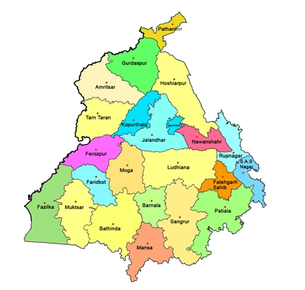

IMAGE OF PUNJAB
History of Amritsar
Amritsar was founded in 1574 by Guru Ram Das, the fourth Sikh Guru, who established the city around a sacred pool named Amrit Sarovar ("Pool of Nectar"), from which the city derives its name. Originally called Ramdaspur in honor of its founder, the city was developed as a spiritual and cultural center for Sikhism. The construction of the Harmandir Sahib (Golden Temple) began under Guru Ram Das and was completed in 1604 by his successor, Guru Arjan Dev, who installed the Guru Granth Sahib, the holy scripture of Sikhism, in the temple. The city grew rapidly, attracting merchants and artisans, and became a hub of trade and pilgrimage. During the Sikh Empire under Maharaja Ranjit Singh (1801–1839), Amritsar flourished as a center of art, culture, and commerce. He adorned the Golden Temple with gold, giving it its iconic appearance, and fortified the city with walls and gates, only one of which—Ram Bagh Gate—remains today.Amritsar also played a pivotal role in India’s freedom struggle. The Jallianwala Bagh Massacre on April 13, 1919, where British troops opened fire on a peaceful gathering, became a turning point in the independence movement.